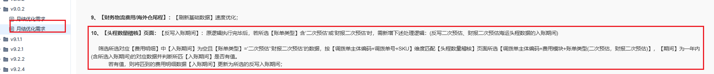

1.【反写入账期间】：
反写海运头程逻辑：
1.1原逻辑上新增反写范围：仅限反写【账单类型】≠’实际‘的【入账期间】和【汇率】；
1.2反写【账单类型】=’二次预估调整‘的数据后，【是否汇总】无需更新为’否‘；---反写入账期间弹窗【账单类型】下拉选项新增’二次预估调整‘；
1.3下述红框内的逻辑需新增二次预估调整账单

2.【拉取并稽核数量】：拉取海运头程费用明细数据范围需排除【账单类型】=‘实际’的数据；